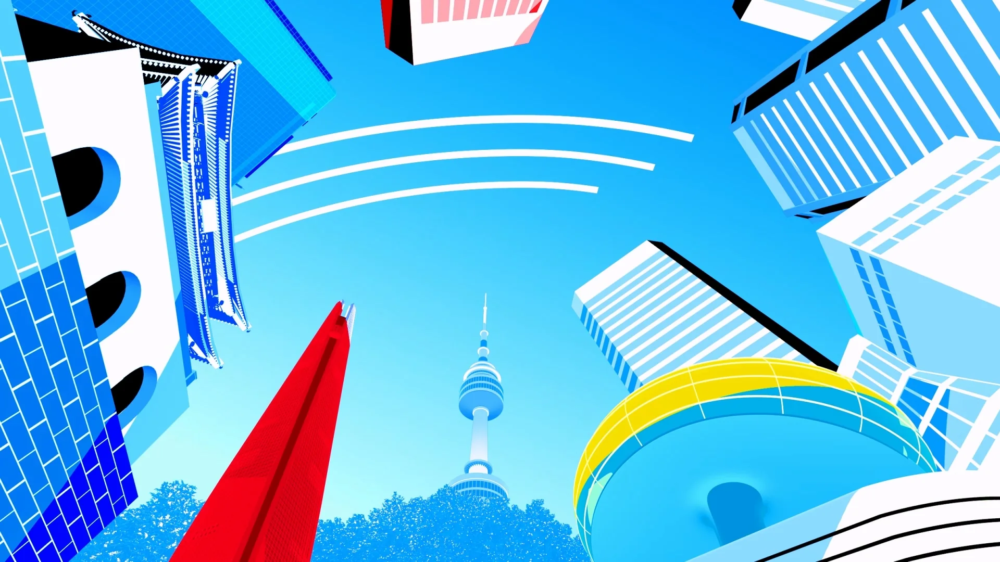

01 / AUTOMOTIVE FILE

Director-led creative and visual direction.
Seoul, Korea.
아이디어를 시각적 방향으로 발전시키고, 실제 화면과 경험으로 구현합니다.
 01 HYUNDAI MOBIS
01 HYUNDAI MOBIS 02 INSPIRE RESORT
02 INSPIRE RESORT
03 PORSCHE 04 NC SOFT
04 NC SOFT브랜드 필름, 캠페인, 공간 안에서 경험되는 비주얼 작업.
01 / AUTOMOTIVE FILE

02 / BLADE & SOUL 2

03 / FRAG PUNK

04 / HD HYUNDAI CES

05 / HYUNDAI GOYANG MOTORSTUDIO

06 / HYUNDAI MOBIS SLOGAN

07 / HYUNDAI WIA CES

08 / KIA 360 HERITAGE

09 / KIA CONNECT STORE

10 / KIA 평택 CXP

11 / LIG HERITAGE

12 / MU SPORTS BRAND FILM

13 / THE FIRST STEP

14 / 호연 류아라편

새로운 표현 방식을 꾸준히 실험합니다. 이미지와 움직임, 공간과 기술의 경계를 넘나들며 실제 작업에 적용할 수 있는 새로운 연출 가능성을 찾습니다.

AI-native visual experiment

하나의 아이디어를 여러 방향에서 살펴보고, 그중 가장 가능성 있는 방향을 선택해 발전시키기 위한 CRYPTIC의 내부 시스템입니다.


CRYPTIC은 브랜드 필름, 캠페인, 비주얼 경험을 중심으로 아이디어를 구체화된 이미지로 발전시키고 실제 결과물까지 구현합니다.
 CRYPTIC / SEOUL
CRYPTIC / SEOULCreative Direction을 중심으로 AI 기반 제작 방식과 프로젝트별 전문 제작 파트너를 결합합니다.
하나의 아이디어를 여러 시각적 방향으로 나눠 비교합니다.
가능성이 가장 높은 방향을 선택하고, 왜 이 방향인지 기준을 정리합니다.
선택한 방향을 구도, 톤, 움직임과 디테일까지 발전시켜 실제 결과물로 연결합니다.